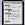

이전 질의 재호출
이전에 기록된 질의를 재호출하여 실행하려면 단추 도구 모음에서 히스토리 아이콘 을 눌러 히스토리 창을 엽니다.
히스토리 창에는 이전에 실행된 배치가 표시됩니다. 표시된 배치는 현재 연결의 히스토리 버퍼에 저장되어 있습니다. 히스토리 버퍼에 저장된 스크립트 수를 변경하려면 옵션 창에서 기타 탭을 누릅니다.
다음 작업을 할 수 있습니다.
-
재사용할 텍스트를 선택하여 강조 표시한 다음 실행을 눌러 구문이나 배치를 입력 창에 다시 표시하고 재실행합니다.
-
위로 아이콘
 을 눌러 히스토리 창에서 이전 배치를 선택한 후 명령을 수정할 수 있는 입력 창에 해당 배치를 표시하거나 실행을 눌러 배치를 재실행합니다.
을 눌러 히스토리 창에서 이전 배치를 선택한 후 명령을 수정할 수 있는 입력 창에 해당 배치를 표시하거나 실행을 눌러 배치를 재실행합니다.
-
아래로 아이콘 을 눌러 히스토리 창에서 다음 배치를 선택한 후 명령을 수정할 수 있는 입력 창에 해당 배치를 표시하거나 실행을 눌러 배치를 재실행합니다.